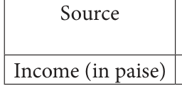
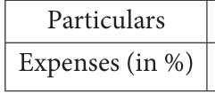

<!DOCTYPE html>
<html lang="en">
<head>
<meta charset="UTF-8">
<meta name="viewport" content="width=device-width,initial-scale=1">
<title>Exercise 6.1 — Statistics</title>
<meta name="description" content="Class 8 Mathematics · Statistics · Exercise 6.1">
<link rel="icon" href="data:image/svg+xml,<svg xmlns='http://www.w3.org/2000/svg' viewBox='0 0 100 100'><text y='.9em' font-size='90'>📘</text></svg>">
<link rel="stylesheet" href="../../../assets/book.css">
<link rel="stylesheet" href="https://cdn.jsdelivr.net/npm/katex@0.16.11/dist/katex.min.css" crossorigin="anonymous">
</head>
<body>
<header class="topbar">
<div class="topbar-in">
  <div class="crumb">
    <span class="c1"><a href="../../../index.html">Library</a> · <a href="../../index.html">Class 8 Mathematics</a></span>
    <span class="c2">Statistics · Exercise 6.1</span>
  </div>
  <a class="tb-btn" data-nav="prev" href="../../06-statistics/03-graphical-representation-of-the-frequency-distribution-for-6.3/index.html" title="6.3 Graphical Representation of the Frequency Distribution for Ungrouped Data">←</a>
  <details class="drawer"><summary class="tb-btn" title="Sections in this chapter">☰</summary>
<div class="drawer-panel"><div class="dh">Statistics</div><a href="../01-introduction-6.1/index.html">6.1 Introduction</a><a href="../02-frequency-distribution-table-6.2/index.html">6.2 Frequency Distribution Table</a><a href="../03-graphical-representation-of-the-frequency-distribution-for-6.3/index.html">6.3 Graphical Representation of the Frequency Distribution for Ungrouped Data</a><a href="../04-exercise-6.1/index.html" aria-current="page">Exercise 6.1</a><a href="../05-graphical-representation-of-the-frequency-distribution-for-6.4/index.html">6.4 Graphical Representation of the Frequency Distribution for Grouped Data</a><a href="../06-exercise-6.2/index.html">Exercise 6.2</a><a href="../07-exercise-6.3/index.html">Exercise 6.3</a><a href="../08-summary/index.html">SUMMARY</a></div></details>
  <a class="tb-btn" data-nav="next" href="../../06-statistics/05-graphical-representation-of-the-frequency-distribution-for-6.4/index.html" title="6.4 Graphical Representation of the Frequency Distribution for Grouped Data">→</a>
  <button class="tb-btn" data-theme-toggle title="Toggle light / dark" aria-label="Toggle light or dark theme">◐</button>
</div>
<div class="progress"><span style="width:81.5%"></span></div>
</header>
<main class="wrap">
<div class="sec-head">
  <p class="eyebrow"><a href="../index.html">Chapter 6 · Statistics</a></p>
  <h1>Exercise 6.1</h1>
  <p class="sec-meta">Textbook pages 10–11 · 7 figures</p>
</div>
<article class="prose">
<ul class="qlist">
<li><span class="mk">1.</span><span class="lt">Fill in the blanks:</span></li>
<li><span class="mk">(i)</span><span class="lt">Data has already been collected by some other person is _____________ data.</span></li>
<li><span class="mk">(ii)</span><span class="lt">The upper limit of the class interval (25-35) is _____________.</span></li>
<li><span class="mk">(iii)</span><span class="lt">The range of the data 200, 15, 20, 103, 3, 196, is _____________.</span></li>
<li><span class="mk">(iv)</span><span class="lt">If a class size is 10 and range is 80 then the number of classes are _________.</span></li>
<li><span class="mk">(v)</span><span class="lt">Pie chart is a __________ graph.</span></li>
</ul>
<figure class="fig side-fig"></figure>
<ul class="qlist">
<li><span class="mk">2.</span><span class="lt">Say True or False:</span></li>
<li><span class="mk">(i)</span><span class="lt">Inclusive series is a continuous series.</span></li>
<li><span class="mk">(ii)</span><span class="lt">Comparison of parts of a whole may be done by a pie chart.</span></li>
<li><span class="mk">(iii)</span><span class="lt">Media and business people use pie charts.</span></li>
<li><span class="mk">(iv)</span><span class="lt">A pie diagram is a circle broken down into component sectors.</span></li>
<li><span class="mk">3.</span><span class="lt">Represent the following data in ungrouped frequency table which gives the number of</span></li>
</ul>
<p>children in 25 families. 1, 3, 0, 2, 5, 2, 3, 4, 1, 0, 5, 4, 3, 1, 3, 2, 5, 2, 1, 1, 2, 6, 2, 1, 4</p>
<ul class="qlist">
<li><span class="mk">4.</span><span class="lt">Form a continuous frequency distribution table for the marks obtained by 30 students in</span></li>
</ul>
<p>a X std public examination. 328, 470, 405, 375, 298, 326, 276, 362, 410, 255, 391, 370, 455, 229, 300, 183, 283, 366, 400, 495, 215, 157, 374, 306, 280, 409, 321, 269, 398, 200.</p>
<ul class="qlist">
<li><span class="mk">5.</span><span class="lt">A paint company asked a group of students about their favourite colours and made a pie</span></li>
</ul>
<p>chart of their findings. Use the information to answer the following questions.</p>
<ul class="qlist">
<li><span class="mk">(i)</span><span class="lt">What percentage of the students like red colour?</span></li>
<li><span class="mk">(ii)</span><span class="lt">How many students liked green colour?</span></li>
<li><span class="mk">(iii)</span><span class="lt">What fraction of the students liked blue?</span></li>
</ul>
<figure class="fig side-fig"></figure>
<ul class="qlist">
<li><span class="mk">(iv)</span><span class="lt">How many students did not like red colour?</span></li>
<li><span class="mk">(v)</span><span class="lt">How many students liked pink or blue? _{Red}</span></li>
</ul>
<aside class="sidenote"><p>Pink</p></aside>
<ul class="qlist">
<li><span class="mk">(vi)</span><span class="lt">How many students were asked about their Green</span></li>
</ul>
<aside class="sidenote"><p>Blue</p></aside>
<p>favourite colours? Yellow</p>
<ul class="qlist">
<li><span class="mk">6.</span><span class="lt">A survey gives the following information of food items</span></li>
</ul>
<p>preferred by people. Draw a Pie chart. Items Vegetables Meat Salad</p>
<p>No.of people 160 90 80</p>
<ul class="qlist">
<li><span class="mk">7.</span><span class="lt">Income from various sources for Government of India from a rupee is given below.</span></li>
</ul>
<p>Draw a pie chart. Corporation Income Customs Excise Service Others tax tax duties Tax 19 16 9 14 10 32</p>
<figure class="fig table-fig"></figure>
<ul class="qlist">
<li><span class="mk">8.</span><span class="lt">Monthly expenditure of Kumaran’s family is given below. Draw a suitable Pie chart.</span></li>
</ul>
<figure class="fig"></figure>
<p>Food Education Rent Transport 50 % 20 % 15 % 5 %</p>
<figure class="fig side-fig"></figure>
<p>Also</p>
<ul class="qlist">
<li><span class="mk">1.</span><span class="lt">Find the amount spent for education if Kumaran spends `6000 for Rent.</span></li>
<li><span class="mk">2.</span><span class="lt">What is the total salary of Kumaran?</span></li>
<li><span class="mk">3.</span><span class="lt">How much did he spend more for food than education?</span></li>
</ul>
</article>
<nav class="pager"><a class="" data-nav="prev" href="../../06-statistics/03-graphical-representation-of-the-frequency-distribution-for-6.3/index.html"><span class="dir">← Previous</span><span class="t">6.3 Graphical Representation of the Frequency Distribution for Ungrouped Data</span><span class="ch">Statistics</span></a><a class="nx" data-nav="next" href="../../06-statistics/05-graphical-representation-of-the-frequency-distribution-for-6.4/index.html"><span class="dir">Next →</span><span class="t">6.4 Graphical Representation of the Frequency Distribution for Grouped Data</span><span class="ch">Statistics</span></a></nav>
</main><footer class="site">Generated from the source textbook PDFs · text, figures and exercises belong to their respective publishers.</footer><script defer src="https://cdn.jsdelivr.net/npm/katex@0.16.11/dist/katex.min.js" crossorigin="anonymous"></script>
<script defer src="https://cdn.jsdelivr.net/npm/katex@0.16.11/dist/contrib/auto-render.min.js" crossorigin="anonymous"
  onload="renderMathInElement(document.body,{delimiters:[
    {left:'\\(',right:'\\)',display:false},
    {left:'$$',right:'$$',display:true},
    {left:'\\[',right:'\\]',display:true}],throwOnError:false,ignoredTags:['script','noscript','style','textarea','pre','code']})"></script>
<script src="../../../assets/book.js"></script>
<script defer src="../../../../assets/search.js?v=1789782769"></script>
<script defer src="../../../../assets/screenshot.js?v=1789782769"></script>
</body>
</html>
